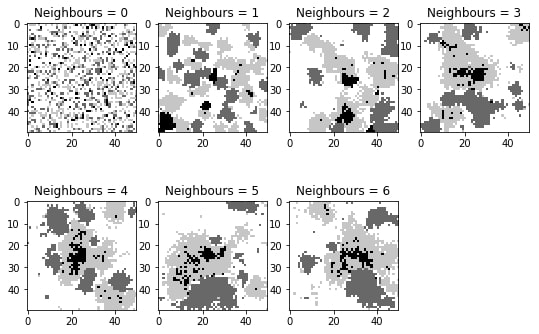
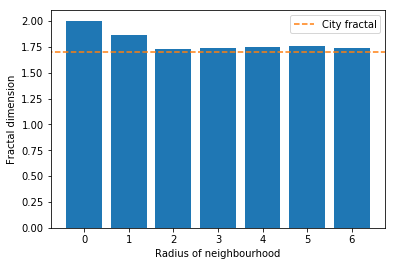

The size of the neighbourhood has been varied. When all the cells have no neighbours, all the transition potentials are zero and thus the result is completely random. However, applying a neighbourhood with a radius of 1 cell, results in the formation of clusters of urban activity. The size of the clusters increases with increasing neighbourhood size.

Figure 2 depicts the fractal dimensions of the simulated cities after 25 iterations for runs using different neighbourhood sizes. It can be seen that the fractal dimension is around a value of 2.0 when there are no neighbours, which indicates randomness. The fractal dimension is approximately between 1.8 and 1.9 for a city that is computed with a neighbourhood that has a radius of 1 cell. Furthermore, the fractal dimension is around 1.7 when the neigbhourhood size has a radius of 2 or more, which is in agreement with the average fractal dimension of real cities.
